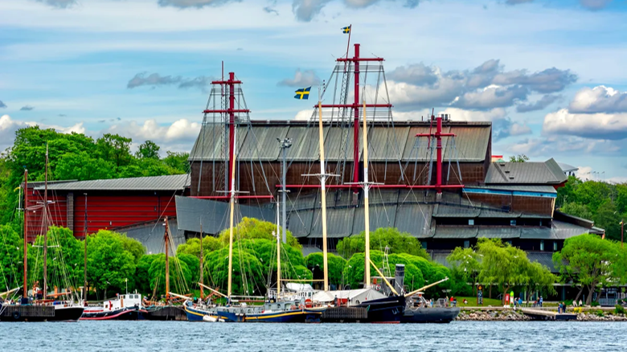
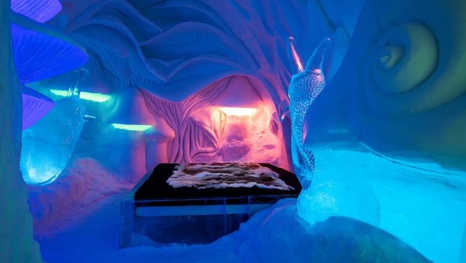
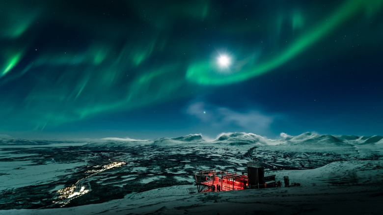

About Sweden
Located in the northern part of Europe and sharing the Scandinavian peninsula with Norway Sweden that allows tourists to do many activities. Sweden is geologically the oldest part of Earth's crust and is fairly flat until you get near the Norwegian border. The country used to be a very poverish country but once tourism and their military technology started to rise, their country's income grew significantly. The country's climate can vary depending on where you are at in the country and what time of year you go. Southern Sweden can have warm summers and mild winters, but northern Sweden is basically frozen a majority of the year.
Visit the Vasa Museum
The Vasa Museum is one of Sweden's most popular attractions, located on the island of Djurgården in Stockholm. It houses the Vasa ship, a 17th-century warship that sank on its maiden voyage in 1628 and was later recovered from the sea in 1961. The museum showcases the beautifully restored ship, with exhibits explaining the history behind it, the ship's construction, and its eventual recovery. If your family is trying to find the right time to visit, there isn't a specific time of year that is better as it's year-round, but as far as the best day, weekends tend to be busier. If you are wanting to avoid big crowds try visiting during the weekdays. it's also much cheaper during the week. The price overall averages around 50 US dollars per adult, but varies during different days.
Explore Gamla Stan (Old Town) in Stockholm

Gamla Stan is the historic heart of Stockholm, a charming medieval old town with narrow cobblestone streets, colorful buildings, and historical landmarks. Key sights include the Royal Palace, Stockholm Cathedral, and Stortorget Square. It’s also a great place for shopping in small boutiques and dining in traditional Swedish restaurants. The best time to visit this beautiful town is during th summertime for vibrant street life which includes bands, festivals, and traditional Swedish dishes. Although if you are wanting to travel in the winter, offers a cozy atmosphere with holiday lights and decorations making it a beautiful place to visit really anytime of year.
Visit the Icehotel in Jukkasjärvi
Located in Jukkasjärvi, Sweden (far northern Sweden, above the Arctic Circle), this hotel is not like any other hotel. The Icehotel is a unique hotel made entirely of ice and snow, rebuilt every year in the winter months. It’s a truly magical experience where everything, from the furniture to the art, is made of ice. Guests can sleep in ice rooms or take guided tours through the ice art gallery. The hotel also offers activities like dog sledding, snowmobiling, and Northern Lights safaris. The best time to visit the hotel is December to March for the full winter experience, especially if you want to see the Northern Lights. As pretty as it is though, to actually stay a night in this hotel can be quite pricey for some people. It averages about 1000 US dollars to stay for a night, so if that's too expensive for some people, it's still an amazing place to visit and just experience.
Book NowNorthern Lights Viewing in Abisko National Park
Abisko National Park is one of the best places in the world to witness the Northern Lights, thanks to its clear skies and unique location. Unlike most places in the US, where even if we do have the Northern Lights, there's usually too much light pollution to see it clearly. In the National Park, you can see it perfectly with the naked eye as it looks just like the photos. The Aurora Sky Station offers guided tours and the chance to enjoy the spectacular light show in the winter months. In addition to the lights, visitors can enjoy cross-country skiing, snowshoeing, and ice climbing. The best time to visit this gorgeous attraction is between late September and March, with peak viewing from December to February.